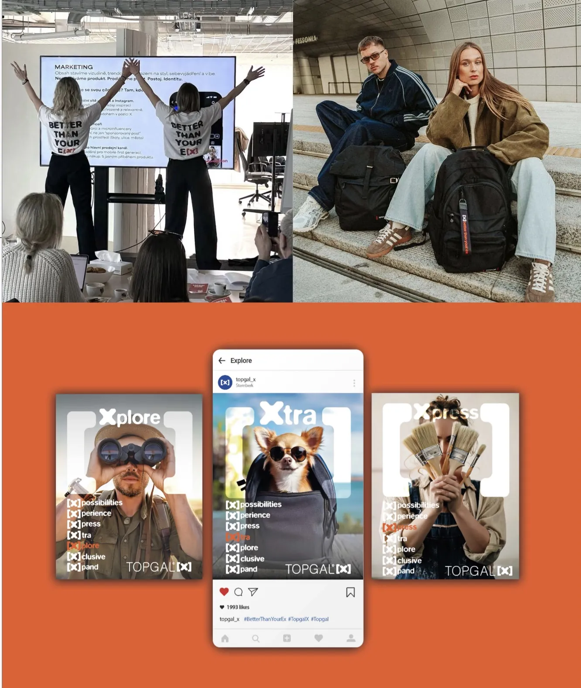
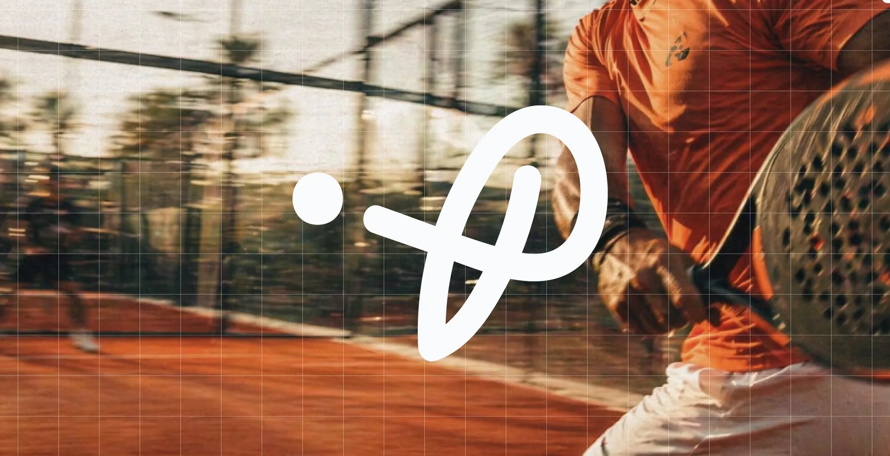
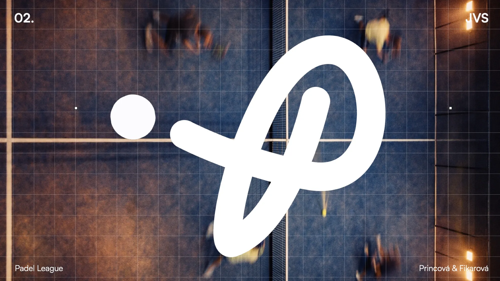

Grafika, brandinga sociální sítě
Jsem grafická designérka a kreativní komunikátorka z Prahy. Navrhuju značky, obsah a kampaně od prvního nápadu po finální realizaci.

Moje projekty Vítěz POPAI 2026
Na zdraví, SmíchoveMost pro Pivovary Staropramen
Vítěz POPAI 2026
Na zdraví, SmíchoveMost pro Pivovary Staropramen
Baví mě propojovat lidi, značky

a vizuální komunikaci. Jsem tak trochu Ferda mravenec: od prvního nápadu až po finální realizaci.
od prvního nápadu až po finální realizaci.
Studuju grafický a mediální design na VŠKK a pracuju jako Social Media Content Manager v Kreativním Kanclu.
Branding
Identity, se kterými se lidé ztotožní
Výzkum, strategie, claimy, logo a vizuální systém.

UX/UIAplikace a weby, které dávají smysl
Od uživatelské cesty po grafiku, kterou lidé sdílí.
 Sociální sítě
Sociální sítě
Obsah od scénáře po střih
Focení, natáčení, střih, copy. A klidně i před kamerou.
Koncept
Kampaně s jedním silným nápadem
Nápady, které vydrží roky, ne jednu sezónu.